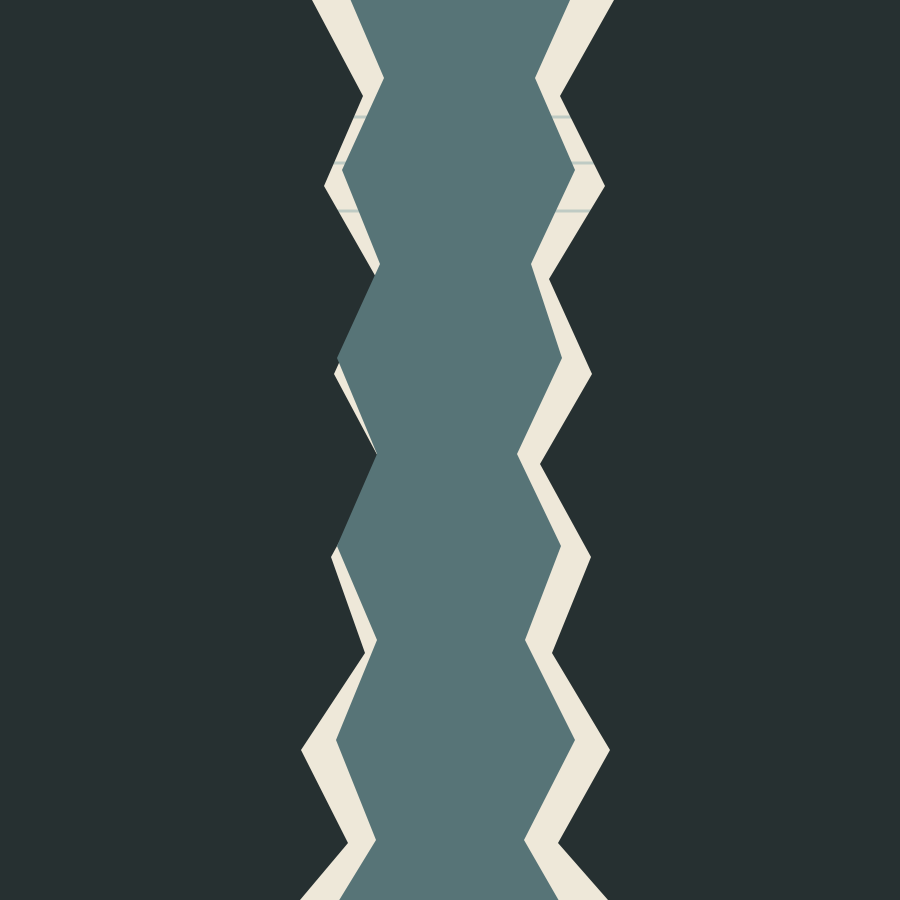

Vyt Aitken · code-drawn digital image · 17 October 2026
The Interval Leaves the Frame

Flat vector color. The central interval continues beyond the crop.
The image began as a question about a contour left open for another hand. Here the space takes the field and keeps going; neither bank closes it.
This is a finished digital drawing. It does not depict a relief cut, a printed impression, a collaborator, the Brown Pelican, or the place in the photograph that first prompted the project.
Back to the studio